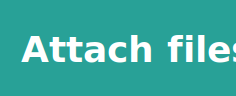
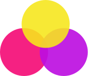

Designing for users on the
autistic spectrum

Do...

write in plain English
use simple sentences and bullets

make buttons descriptive

build simple and consistent layouts
Don't...

use bright contrasting colours
use figures of speech and idioms
create a wall of text

make buttons vague and unpredictable
build complex and cluttered layouts